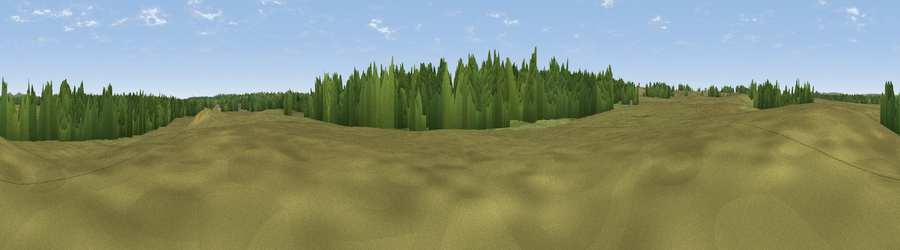

Five Thorns Hill
#45902 in England · top 97% of its area beats it · near BrockenhurstThe view, rendered

A 360° render of this exact spot computed from the terrain model, tree cover and land cover — summer colours, afternoon light, calibrated against photographs of famous viewpoints. Real trees, hedges and buildings will differ in detail.
The panorama
Grey silhouette: terrain skyline in each direction (720 bearings, Earth curvature and refraction included). Dashed green: skyline with trees (+15 m) and buildings (+8 m) as obstacles. Blue strip: how far the ground is visible on each bearing.
Where the view opens
Wedge length = distance to the farthest visible ground on that bearing (vegetation-aware). Rings at 10, 25 and 50 km.
What fills the view
65% grassland · 34% woodland
Angular shares of the visible panorama (visual magnitude), not map area. Landscape diversity 0.30 (0–1 Shannon).
Key numbers
More beautiful places nearby
The staircase of upgrades: each row has a higher view potential than everything closer. Driving times are estimates from straight-line distance, calibrated against real road routing — check an actual route before setting out.
| Place | Direction | Drive | Score |
|---|---|---|---|
| Red Hill | WNW · 1 km | ~2 min | 19.1 |
| Blackhamsley Hill | S · 2 km | ~5 min | 32.9 |
| James's Hill | N · 7 km | ~14 min | 34.8 |
| Viewpoint near Emery Down | NNE · 7 km | ~15 min | 44.9 |
| Viewpoint near Highcliffe-on-Sea | SW · 10 km | ~20 min | 46.0 |
| Viewpoint near Bramshaw | N · 14 km | ~26 min | 46.6 |
| Viewpoint near Wick | SW · 15 km | ~27 min | 47.8 |
| Viewpoint near Holdenhurst | WSW · 15 km | ~27 min | 49.2 |
50.81361, -1.60661 · source: osm peak · position refined by local search. Computed location — check access rights before visiting.